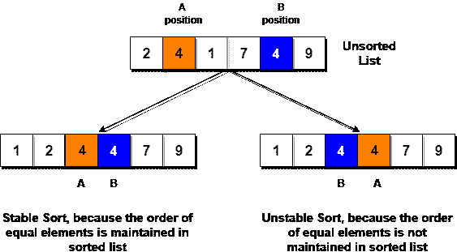
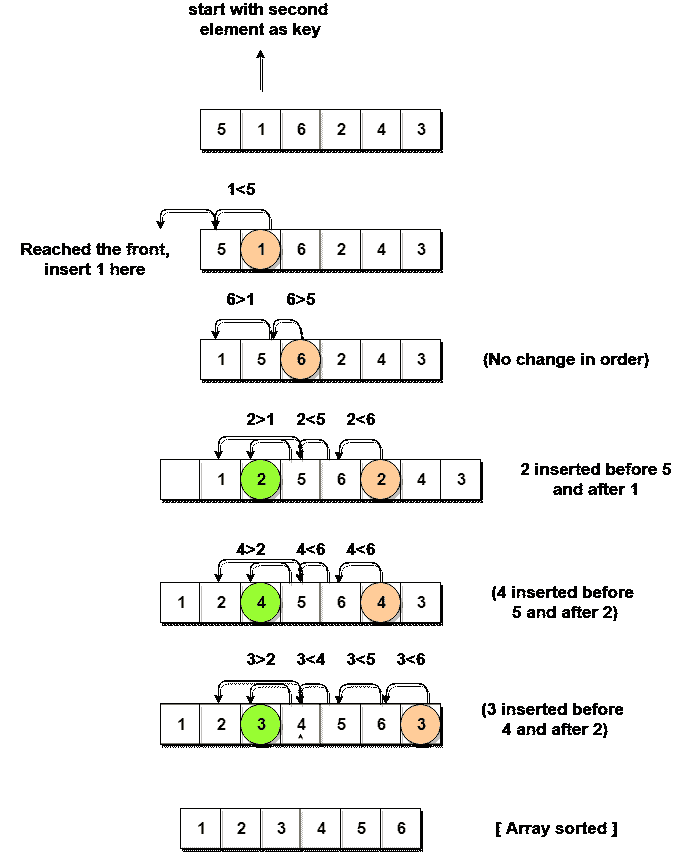

插入排序算法
原文：https://www.studytonight.com/data-structures/insertion-sorting
假设你手里有一副牌中的 10 张。它们被排序，或者按照数字的升序排列。
如果我再给你一张牌，让你把的牌插在刚刚好的位置，这样你手里的牌还能排序。你会怎么做？
嗯，你必须从头到尾检查每张卡，找到新卡的正确位置，将它的价值与每张卡进行比较。一旦你找到正确的位置，你将插入卡片在那里。
同样，如果有更多的新卡提供给你，你可以很容易地重复同样的过程，插入新卡，并保持卡片分类。
这正是插入排序的工作原理。它从索引1(不是0)开始，从索引1开始的每个索引就像一张新卡，你必须把它放在左边排序的子数组的右边位置。
以下是插入排序的一些重要特征:
- 它对于较小的数据集是有效的，但是对于较大的列表非常低效。
- 插入排序是自适应的，这意味着如果提供部分排序的数组作为输入，它将减少总的步骤数，从而提高效率。
- 它优于选择排序和冒泡排序算法。
- 其空间复杂度较小。像冒泡排序一样，插入排序也需要一个额外的内存空间。
- 这是一种稳定的排序技术，因为它不会改变相等元素的相对顺序。

插入排序是如何工作的？
以下是插入排序中涉及的步骤:
- 我们首先制作给定数组的第二个元素，即索引
1处的元素，即key。这里的key元素是我们需要添加到我们现有的分类卡片集中的新卡(记住上面的卡片例子)。 - 我们将
key元素与其之前的元素进行比较，在本例中，索引0处的元素:- 如果
key元素小于第一个元素，我们在第一个元素之前插入key元素。 - 如果
key元素大于第一个元素，那么我们把它插在第一个元素之后。
- 如果
- 然后，我们将数组的第三个元素设为
key，并将它与它左边的元素进行比较，并将其插入右边的位置。 - 我们继续重复这个过程，直到数组被排序。
让我们考虑一个有值的数组{5, 1, 6, 2, 4, 3}
下面，我们有一个泡泡排序如何排序给定数组的图示。

如上图所示，在选择一个key后，我们开始迭代key左边的元素。
如果元素大于key元素，我们继续向左移动，当我们找到小于key元素的元素时，我们停止。
并且，在小于key元素的元素后插入key元素。
实现插入排序算法
下面我们有一个 C++ 语言中插入排序的简单实现。
#include <stdlib.h>
#include <iostream>
using namespace std;
//member functions declaration
void insertionSort(int arr[], int length);
void printArray(int array[], int size);
// main function
int main()
{
int array[5] = {5, 1, 6, 2, 4, 3};
// calling insertion sort function to sort the array
insertionSort(array, 6);
return 0;
}
void insertionSort(int arr[], int length)
{
int i, j, key;
for (i = 1; i < length; i++)
{
j = i;
while (j > 0 && arr[j - 1] > arr[j])
{
key = arr[j];
arr[j] = arr[j - 1];
arr[j - 1] = key;
j--;
}
}
cout << "Sorted Array: ";
// print the sorted array
printArray(arr, length);
}
// function to print the given array
void printArray(int array[], int size)
{
int j;
for (j = 0; j < size; j++)
{
cout <
排序数组:1 2 3 4 5 6
现在让我们试着理解上面简单的插入排序算法。
我们取了一个带有 6 整数的数组。我们取了一个变量key，在每次传递过程中，我们将数组的每个元素放入其中，从第二个元素开始，也就是a[1]。
然后使用while循环，我们迭代，直到j变得等于零或者我们找到一个大于key的元素，然后我们在那个位置插入key。
我们继续这样做，直到j变得等于零，或者我们遇到比key小的元素，然后我们停止。当前的key现在处于正确的位置。
然后我们将下一个元素设为key，然后重复同样的过程。
在上面的数组中，首先我们选取 1 作为key，我们将其与 5 (元素在 1 之前) 1 比 5 小，我们在 5 之前插入 1 。然后我们挑 6 作为key，与 5 和 1 进行对比，这次没有换挡到位。然后 2 变成key与 6 和 5 比较，然后 2 插在 1 之后。这一直持续到整个数组被排序。
插入排序的复杂度分析
如上所述，插入排序是一种高效的排序算法，因为它不使用for循环在预设条件下运行，而是使用一个while循环，这避免了数组排序后的额外步骤。
尽管插入排序是有效的，但是如果我们为插入排序算法提供一个已经排序的数组，它仍然会执行外部的for循环，从而需要n步来对已经排序的n元质数组进行排序，这使得它的最佳情况时间复杂度是n的线性函数。
最坏情况时间复杂度【大 O】:O(n2)
最佳案例时间复杂度[大ω]:O(n)
平均时间复杂度【大θ】:O(n2)
空间复杂度: O(1)